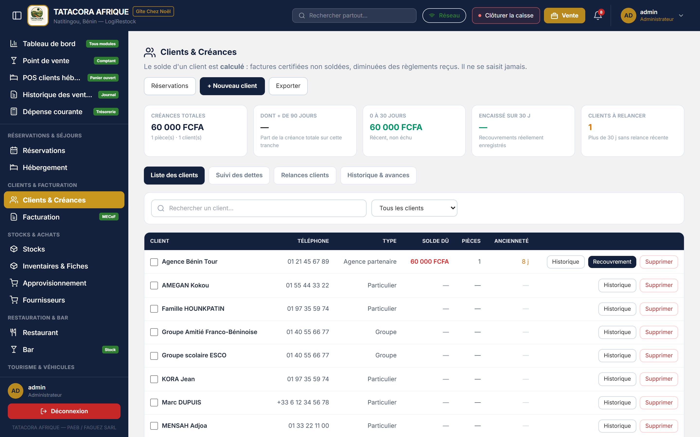
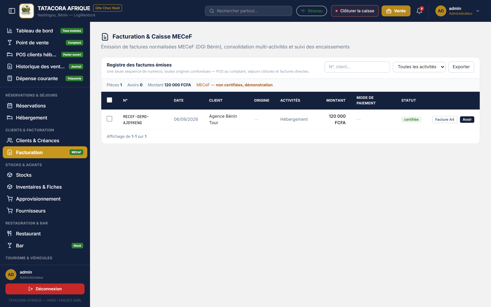
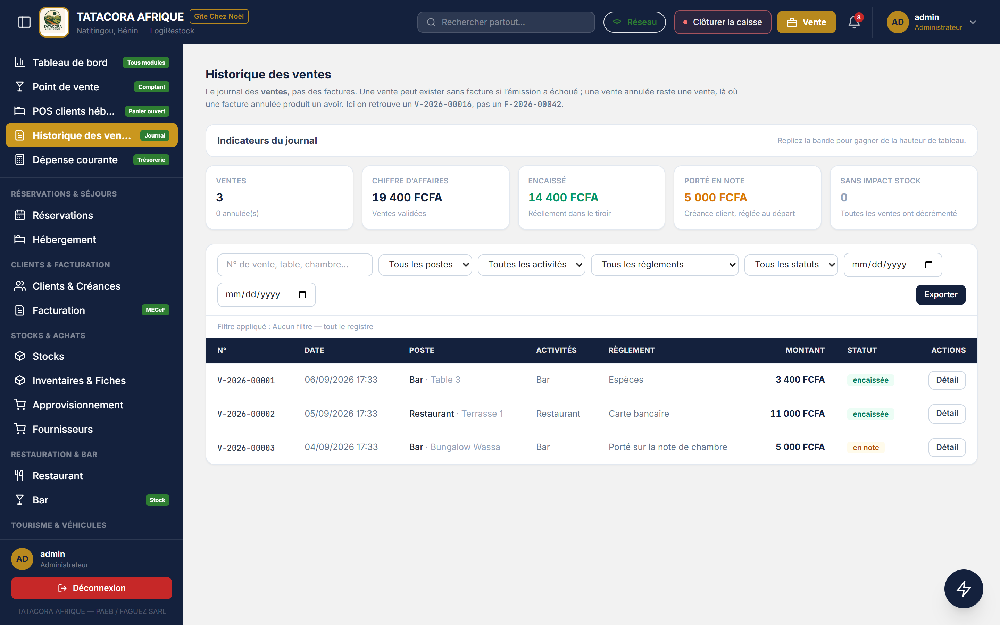
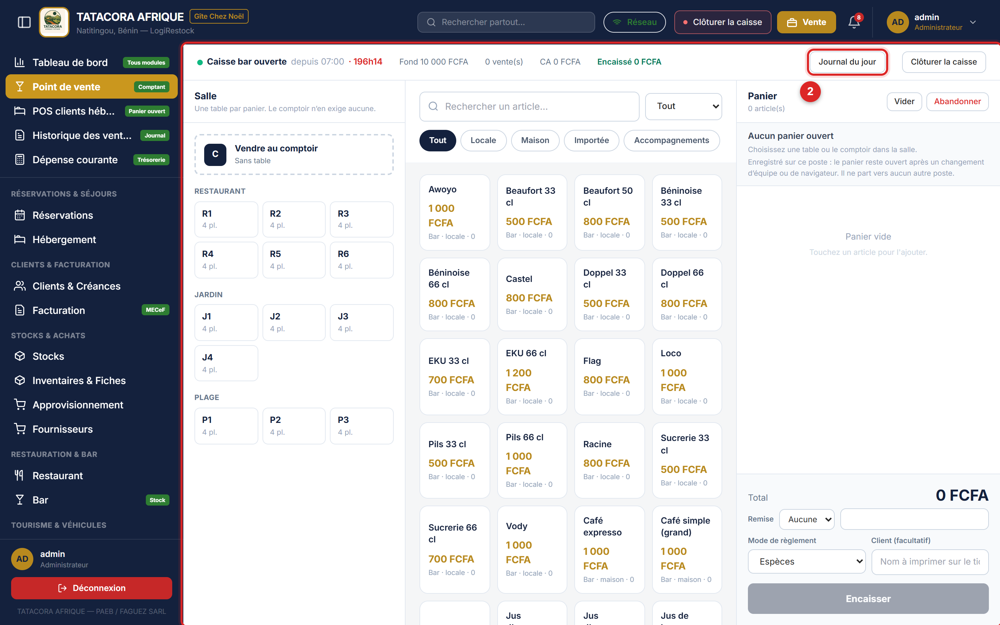
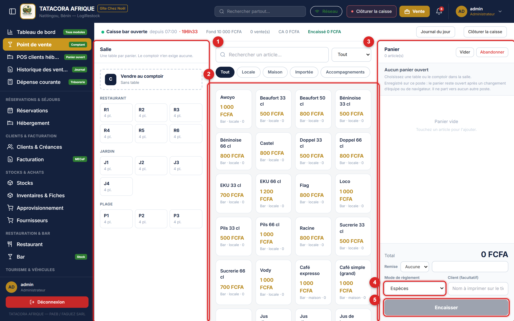
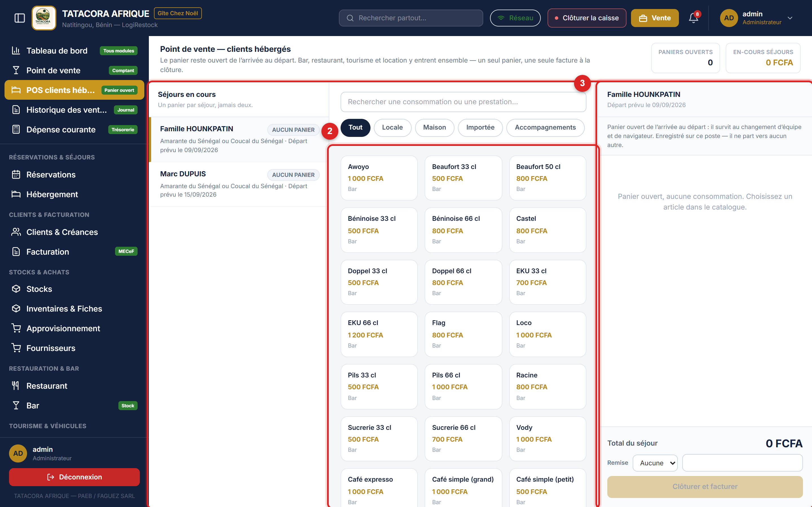
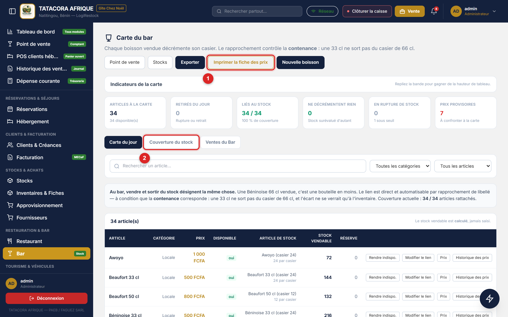

Un client, une fiche. Tous les modules — réservations, bar, restaurant, tourisme, véhicules —
pointent vers la même fiche, et son solde est calculé depuis les pièces. Vous ne saisissez
jamais un solde à la main.
5.1 Créer et tenir une fiche client
Chemin
Menu latéral ➔ Clients & Créances ➔ + Nouveau client
Cliquez sur + Nouveau client.
Renseignez le Nom complet, le Téléphone, l'Email si vous l'avez, et le Type :
Particulier, Groupe, Agence partenaire ou Structure.
Cliquez sur Enregistrer.
⚠️Attention
Si un client du même nom existe déjà, le logiciel signale le doublon et vous demande de
confirmer — il ne bloque pas. Vérifiez le numéro de téléphone avant de confirmer : deux fiches
pour la même personne, ce sont deux soldes, et un client relancé pour une somme qu'il a déjà payée.
5.2 Suivre les créances
L'écran Clients & Créances ouvre sur cinq indicateurs — créances totales, dont plus de
90 jours, 0 à 30 jours, encaissé sur 30 jours, clients à relancer — puis quatre onglets.
Onglet
Ce que vous y faites
Liste des clients
Le fichier client, avec le solde dû, le nombre de pièces et l'ancienneté de la dette. Deux actions par ligne : Historique et Recouvrement.
Suivi des dettes
La balance âgée : 0-30, 31-60, 61-90, plus de 90 jours.
Relances clients
Les relances déjà tracées, leur canal et la promesse de règlement obtenue.
Historique & avances
Les recouvrements enregistrés et les avances reçues.
Enregistrer un recouvrement
Sur la ligne du client, cliquez sur Recouvrement.
Choisissez la Pièce réglée — la réservation ou la note concernée.
Saisissez le Montant reçu (FCFA), le Mode de règlement, la Référence si le
règlement en porte une, et un Commentaire si nécessaire.
Cliquez sur Enregistrer le recouvrement.
Le solde du client et la balance âgée se recalculent immédiatement.
🛑Alerte
Un trop-perçu est refusé : vous ne pouvez pas enregistrer un règlement supérieur au reste dû
sur la pièce. Si le client verse davantage, enregistrez le montant dû et traitez le surplus comme
une avance, dans l'onglet Historique & avances.
Tracer une relance
Le bouton Relancer enregistre la relance : sa date, son canal et la promesse obtenue.
L'écran le dit sans ambiguïté — la relance est tracée, pas envoyée. C'est vous qui
téléphonez ou écrivez au client ; le logiciel conserve la trace de ce que vous avez fait.

Figure 5.1 — L'écran Clients & Créances et sa balance âgée.
5.3 Le registre des factures
Chemin
Menu latéral ➔ Facturation
Le registre porte une seule séquence de numéros, toutes origines confondues : POS au
comptant, séjour client hébergé et facture directe. Un numéro n'est jamais réutilisé.
Filtrez par origine (POS au comptant, Séjour client hébergé, Facture directe) et par activité (Hébergement, Restaurant, Bar, Véhicules, Tourisme).
Les trois compteurs en tête donnent le nombre de Pièces, le nombre d'Avoirs et le Montant net de la période.
Export Excel et Export PDF reprennent exactement la liste filtrée.
⚠️Attention
Le bandeau « MECeF — non certifiées, démonstration » signifie ce qu'il écrit : l'inscription
à la plateforme fiscale de la DGI n'est pas encore effective, aucune facture ne porte de cachet
fiscal. Ne remettez pas ces documents comme des factures normalisées tant que la mention n'a pas
changé.
🛑AlerteUne facture émise ne se modifie pas et ne se supprime pas. La seule correction possible est
l'avoir : une pièce de sens inverse, qui laisse la facture d'origine dans le registre. C'est
la règle sur laquelle repose la valeur probante de toute la facturation.

Figure 5.2 — Le registre des factures, toutes origines confondues.
5.4 L'historique des ventes
Chemin
Menu latéral ➔ Historique des ventes
C'est le journal des ventes, à ne pas confondre avec le registre des factures. On y cherche
un numéro de vente V-2026-00016, pas un numéro de facture F-2026-00042.
Indicateur
Ce qu'il compte
Ventes
Le nombre de ventes de la période, et combien ont été annulées.
Chiffre d'affaires
Les ventes validées.
Encaissé
Ce qui est réellement dans le tiroir.
Porté en note
Ce qui a été porté sur une note de chambre : une créance, réglée au départ du client.
Sans impact stock
Les ventes qui n'ont décrémenté aucun article, faute de lien à une fiche de stock.
Les filtres portent sur le poste, l'activité, le mode de règlement et le statut. Chaque ligne
ouvre son Détail et, quand elle en a une, sa facture.

Figure 5.3 — L'historique des ventes : le journal des ventes, pas des factures.
Chapitre 6Point de vente : caisse, tables et panier
Deux points de vente, une seule mécanique. Le Point de vente encaisse au comptant, table par
table ou au comptoir. Le POS clients hébergés alimente le panier d'un séjour, qui reste ouvert
jusqu'au départ du client. La différence tient au client, pas à la manière de saisir.
6.1 Ouvrir la caisse
Rien ne s'encaisse tant que la caisse du poste n'est pas ouverte.
Cliquez sur Ouvrir la caisse, dans la barre supérieure ou dans le bandeau du point de vente.
Choisissez le Poste de caisse — Réception, Restaurant ou Bar.
Saisissez le Fond de caisse (FCFA) : la monnaie présente dans le tiroir avant la première vente.
Validez par Ouvrir.
Le bandeau affiche alors, en continu : l'heure d'ouverture, le fond, le nombre de ventes,
le chiffre d'affaires, le montant Encaissé et le montant En note.

Figure 6.1 — Le bandeau de caisse, en haut de l'écran du point de vente.
1L'état de la session : poste, heure d'ouverture, fond, ventes, encaissé, en note.
2Journal du jour — le détail des ventes de la session en cours.
6.2 Vendre au comptoir ou à une table
Chemin
Barre supérieure ➔ Point de vente
Dans la colonne Salle, choisissez la table (T1 à T6, J1 à J4, P1 à P3) ou
Vendre au comptoir si la vente n'est rattachée à aucune table.
Filtrez le catalogue par famille — Tout, Bar, Restaurant — puis par catégorie,
ou tapez directement dans Rechercher un article….
Cliquez sur l'article : il s'ajoute au Panier. Cliquez à nouveau pour augmenter la quantité,
ou utilisez les boutons − et + de la ligne.
Vérifiez le Total.
Choisissez le Mode de règlement : Espèces, Mobile Money, Carte bancaire, Virement ou
Porté sur la note de chambre.
Cliquez sur Encaisser.

Figure 6.2 — L'écran Point de vente, une table par panier.
1La Salle : le comptoir et les tables, par espace.
2Le catalogue, filtré par famille et par catégorie.
3Le Panier de la table sélectionnée.
4Le Mode de règlement.
5Le bouton Encaisser.
ℹ️InformationUne table, un panier. Tant que la table n'est pas encaissée, son panier reste ouvert et
vous pouvez y revenir : rien n'est perdu si vous passez à une autre table entre-temps. Le comptoir,
lui, n'exige aucune table.
⚠️AttentionPorté sur la note de chambre n'est pas un encaissement. Ce montant n'entre pas dans le tiroir :
il devient une créance du client, réglée à son départ. Ne l'utilisez que pour un client
effectivement hébergé, et vérifiez que vous avez sélectionné le bon séjour.
✅Astuce
Le point orange sur une vignette d'article signale un article qui ne décrémente aucun stock,
faute de fiche technique. La vente est correcte ; c'est le stock affiché qui reste inchangé.
Signalez ces articles au magasinier plutôt que de corriger le stock à la main.
6.3 Le panier d'un client hébergé
Chemin
Menu latéral ➔ POS clients hébergés
Ici, le panier reste ouvert de l'arrivée au départ. Bar, restaurant, tourisme et location
y entrent ensemble : un seul panier par séjour, une seule facture à la clôture.
Dans Séjours en cours, cliquez sur le séjour du client. La carte indique l'unité occupée,
la date de départ, le montant déjà porté et le nombre de lignes.
Ajoutez les articles consommés, exactement comme au point de vente comptant.
Laissez le panier ouvert : il se complète à chaque consommation, jour après jour.
Au départ du client, cliquez sur Clôturer et facturer.

Figure 6.3 — Le point de vente des clients hébergés.
1Séjours en cours — un panier par séjour, jamais deux.
2Le catalogue, complété d'un rayon Tourisme & location.
3Le panier du séjour, ouvert jusqu'au départ.
🛑AlerteLa clôture est définitive. Un panier clôturé produit la facture et se ferme : plus aucune
ligne ne peut y être ajoutée. Faites le tour du bar et de la cuisine avant de clôturer —
une consommation servie après la clôture ne pourra plus être rattachée au séjour.
⚠️Attention
Une réservation dont le panier est encore ouvert ne peut pas être archivée. Le logiciel refuse
l'opération et le dit : les consommations existeraient encore, sans support pour les facturer, et
l'écart n'apparaîtrait qu'à la caisse — trop tard, le client étant parti.
6.4 Clôturer la caisse
Cliquez sur Clôturer la caisse dans le bandeau ou la barre supérieure.
Lisez le récapitulatif : Fond de caisse, Espèces encaissées, Théorique en caisse.
Comptez le tiroir et saisissez le Montant réellement compté.
Validez par Clôturer.
Le logiciel annonce alors « Caisse clôturée — aucun écart » ou « Caisse clôturée — écart de … ».
L'écart est conservé : il ne se corrige pas, il s'explique.
ℹ️Information
Le théorique ne compte que les espèces. Le Mobile Money, la carte et les montants portés en
note de chambre n'y figurent pas : ils ne passent pas par le tiroir.
6.5 Les cartes du restaurant et du bar
Chemin
Menu latéral ➔ Restaurant · Menu latéral ➔ Bar
Ces deux écrans portent la carte réellement vendue : catégories, prix, disponibilité du jour et
lien au stock. Six indicateurs les résument — articles à la carte, retirés du jour, liés au stock,
articles qui ne décrémentent rien, ruptures et prix provisoires.
Rendre indispo. retire l'article de la carte du jour : il disparaît du point de vente.
Lier au stock rattache l'article à une fiche de stock — c'est ce lien qui fait sortir la bouteille du casier à la vente.
Imprimer la fiche des prix produit le document remis au client (chapitre 11).
L'onglet Couverture du stock compte, catégorie par catégorie, les articles rattachés et
ceux qui ne le sont pas : c'est là qu'un trou de rattachement se voit avant l'inventaire.

Figure 6.4 — La carte du bar, son édition et son contrôle de couverture.
1Imprimer la fiche des prix.
2L'onglet Couverture du stock.
🛑Alerte
Au bar, la contenance doit correspondre : une 33 cl ne sort jamais du casier de 66 cl.
Un mauvais rattachement ne se voit pas à la vente — il n'apparaît qu'à l'inventaire, sous la forme
d'un écart que personne ne sait expliquer.
ℹ️Information
Les écrans Restaurant & Cuisine et Bar & POS Boissons (accessibles par leur adresse)
portent les référentiels historiques des plats et des boissons — nom, catégorie, prix de vente,
disponibilité. La carte réellement vendue au point de vente est celle décrite ci-dessus.